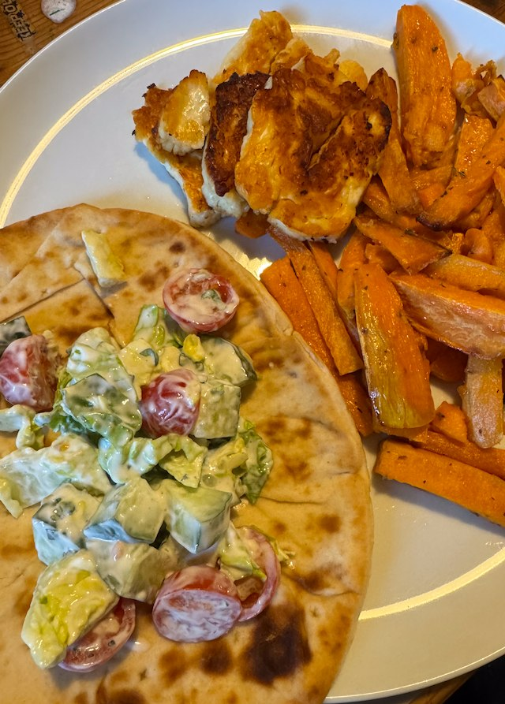

Halloumi Gyros

From Hello Fresh.
Ingredients
- 6 flatbreads
- Sweet potatoes fries
- 1 bag sweet potatoes, peeled and chipped
- 1 tsp dried oregano
- olive oil
- salt and pepper
- Halloumi
- 2 pack halloumi, sliced
- 1 tbsp smoked paprika
- honey
- Salad
- ½ pack cherry tomatoes, quartered and salted
- ½ cucumber, diced
- 2 little gem lettuce, torn to pieces
- 150g greek yogurt
- salt
- 1 lemon, zest
- few mint leaves, chopped.
Method
Make the chips. Heat the oven to 210°C. Drizzle the fries with olive oil, and add salt, pepper and oregano. Cook in oven for 20 min, flip after 10 min.
Make the salad. Whisk the yogurt with the mint, lemon zest and a little salt. Mix the tomatoes, cucumber, lettuce, then mix in the yogurt.
Make the halloumi. Add the sliced halloumi to a hot pan, and sprinkle with paprika. Turn the heat down to medium. The halloumi will release liquid and will not appear to cook, but once the liquid has evaporated it will quickly brown so keep and eye. Flip the halloumi, drizzle with honey and cook for 2 min more.
Assemble. Heat the flatbreads in the oven for 2 min. Then assemble the wraps with salad and halloumi. Serve with the chips.